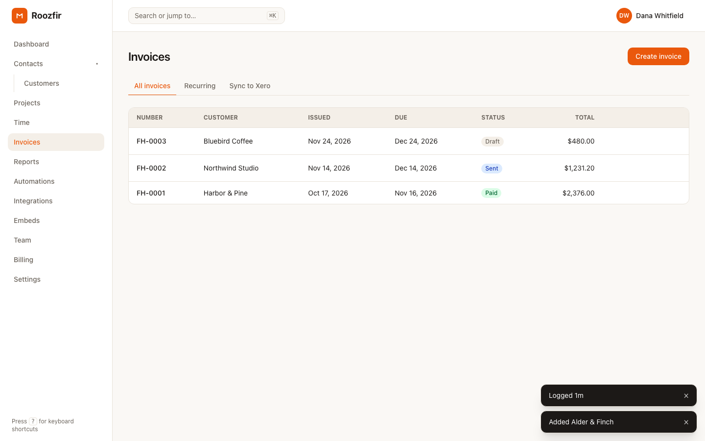
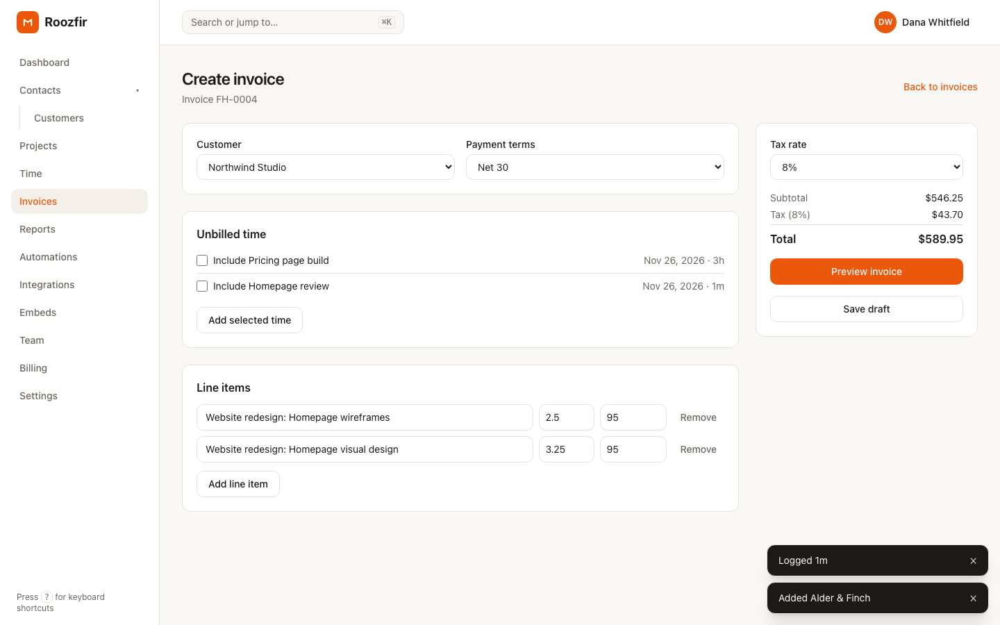
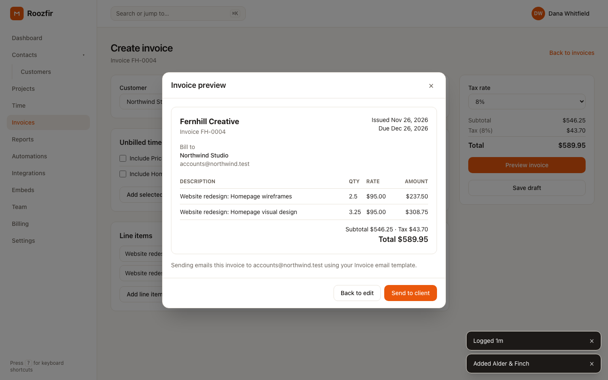
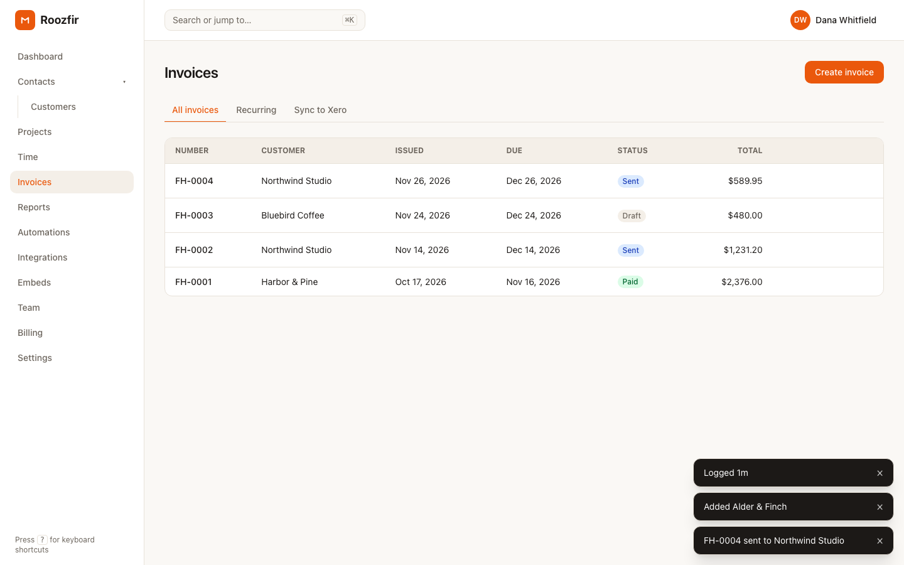

Help Center » Customers and invoices
How to create and send an invoice
You can build an invoice from the time you have already tracked, add extra line items and tax, check how it looks, and send it from Roozfir.
- Open Invoices in the left-hand menu.

The Invoices page with the list of invoices and the Create invoice button - Click Create invoice.
- Choose the Customer. Their unbilled time shows up underneath. Tick the entries you want and click Add selected time.
- Add anything else with Add line item, and choose the Tax rate.

The invoice editor with two time entries added as lines and a tax rate of 8 percent - Click Preview invoice to see what your customer will receive.

The invoice preview window - Click Send to client. The invoice is marked as Sent.

The invoices list with the new invoice marked as sent